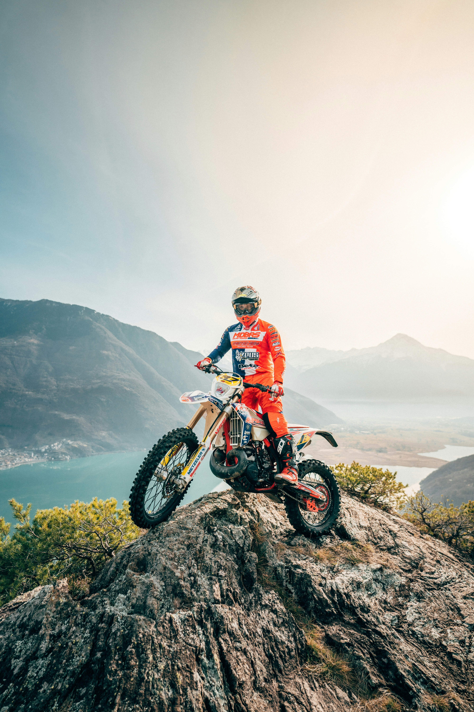
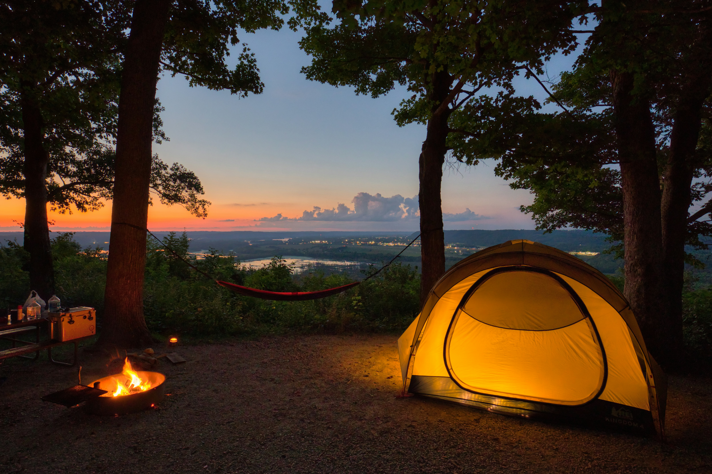

Mitt portfolio
Endurocross

Endurocross är en väldigt rolig och spännande sport eftersom man får kombinera fart, teknik och utmaningar. Man kör i varierande terräng som skog, lera, grus och över olika hinder, vilket gör att ingen körning är den andra lik. Det är också bra träning eftersom man använder hela kroppen och tränar både styrka, kondition, balans och koordination. Dessutom utvecklar man sin körteknik och lär sig att hantera svåra situationer. Det bästa är att man får vara ute i naturen, utmana sig själv och samtidigt ha riktigt roligt!
Mat

Mat är viktigt eftersom det ger kroppen energi och näring som behövs för att orka med vardagen. Det är också något som kan vara väldigt roligt eftersom det finns så många olika maträtter, smaker och kulturer att upptäcka. Genom att äta varierad och hälsosam mat får man bättre förutsättningar för att må bra, bygga muskler och hålla sig pigg och aktiv. Dessutom kan mat vara ett sätt att umgås med familj och vänner och testa nya saker tillsammans!
camping

Camping är roligt eftersom man får komma ut i naturen, koppla av och komma bort från vardagens stress. Man får möjlighet att upptäcka nya platser, sova i tält eller husvagn och umgås med familj och vänner. Det är också ett bra sätt att lära sig vara mer självständig och klara sig ute i naturen. Man kan exempelvis laga mat över öppen eld, fiska, bada och utforska omgivningen. Camping ger både äventyr, avkoppling och fina minnen!